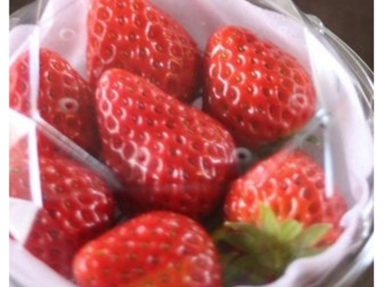
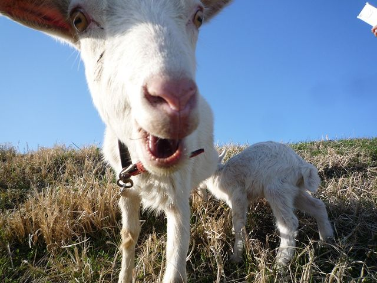

02. Food Science, การเกษตร & ฟาร์มสตรอเบอร์รี่
ข้อมูลวิจัยนวัตกรรมอาหารสำหรับน้องเติมเต็ม พร้อมกิจกรรมเก็บสตรอเบอร์รี่สดในเรือนกระจกฤดูหนาว

1. NARO Tsukuba Agriculture Research Hall (食と農の科学館)
3-1-1 Kannondai, Tsukuba City, Ibaraki 305-8517, Japan
ลิงก์ทางการ: NARO TARH Official Site | ภาษาอังกฤษ: NARO English
เวลาทำการ & วันหยุด
- เวลาทำการ: 9:00 - 16:00 น. (เปิด จันทร์ - ศุกร์)
- วันปิดทำการ: เสาร์-อาทิตย์, วันหยุดนักขัตฤกษ์ และช่วงปีใหม่ (28 ธ.ค. - 4 ม.ค.)
- สถานะวันที่ 24-27 ธ.ค. เปิดทำการปกติทุกวัน (24 อังคาร, 25 พุธ, 26 พฤหัส, 27 ศุกร์)
การเดินทาง (Tsukbus Nambu Shuttle)
จาก Tsukuba Center ขึ้นรถบัส Tsukbus สาย Nambu Shuttle (南部シャトル) ลงที่ป้าย "Norin Danchi Chuo" (農林団地中央) ใช้เวลา 18 นาที (ค่าบัส 200-300 เยน) แล้วเดินต่อ 5 นาที
จุดเด่นและนวัตกรรมอาหาร
- Food Science & Future Dining: จัดแสดงการวิเคราะห์โภชนาการพืช เทคโนโลยีแปรรูปอาหาร ถนอมอาหาร และการวิจัยอาหารฟังก์ชัน (Functional Food)
- Smart Agriculture Exhibition: ระบบเกษตรอัจฉริยะ การใช้ AI, หุ่นยนต์หว่านเก็บเกี่ยว และเกษตรกรรมแนวตั้ง
- 3-Screen Immersive Theater: โรงภาพยนตร์ 3 จอนำเสนอโลกนวัตกรรมอาหารของญี่ปุ่น

2. Kawarakeya Strawberry Farm (かわらけや いちご狩り)
1599-1 Kamisakai, Tsukuba-shi, Ibaraki 305-0011 (เขต Oda)
ลิงก์จอง Jalan.net: Jalan Kawarakeya Booking | เว็บไซต์ฟาร์ม: kawarakeya.com

สตรอเบอร์รี่สดลูกโต หวานฉ่ำในเรือนกระจกอบอุ่น (ภาพถ่าย Jalan.net)

ทางเดินในเรือนกระจกยกรอบ เดินเก็บสะดวกทุกวัย (ภาพถ่าย Jalan.net)
คะแนนรีวิว Jalan.net
- คะแนนรวม: 4.1 / 5 ดาว (จาก 13 รีวิวบน Jalan.net)
- คะแนนกลุ่มครอบครัวเด็กเล็ก (子連れ): 4.7 / 5 ดาว (คะแนนสูงมาก!)
- กลุ่มหลักที่เข้าชม: ครอบครัวที่มีเด็กเล็ก (3-5 คน) และผู้สูงอายุ
การเดินทาง & อัตราค่าบริการ
- การเดินทาง: ขึ้นบัส **Tsukbus** สาย Oda Shuttle (小田シャトル) จาก Tsukuba Center ลงป้าย "Sakae" (栄) 14 นาที (200 เยน) เดินต่อ 10 นาที
- ราคาบุฟเฟต์ 30 นาที: ผู้ใหญ่ ~2,000–2,800 เยน / เด็ก ~1,500–2,300 เยน
ไฮไลต์ยอดฮิตสำหรับครอบครัว: ให้อาหารน้องแพะ 🐐
เด็กๆ สามารถนำขั้วและใบสตรอเบอร์รี่ที่เก็บเสร็จแล้วไปป้อนให้ **น้องแพะ (ヤギ)** ในฟาร์มได้เลย เป็นกิจกรรมธรรมชาติและ Eco-cycle ที่เด็กๆ ชื่นชอบมาก รับประกันความประทับใจสำหรับน้องเติมเต็มครับ!
3. Workshop ทำอาหาร & ขนมเชิงการเรียนรู้ (Family Cooking Workshop)
เสริมทักษะความสนุกด้านการประกอบอาหารให้น้องเติมเต็ม โดยเข้าร่วมเวิร์กชอปทำขนมจากแป้งข้าวอิบารากิ (Ibaraki Rice Flour Sweets) หรือทำเบเกอรี่สดใหม่
- ศูนย์กิจกรรมที่แนะนำ: Tokyo Gas Tsukuba Cooking Studio หรือ Aozora Kitchen Tsukuba (青空キッチン つくばスクール)
- งบประมาณ: ประมาณ 800 – 2,500 เยนต่อคน